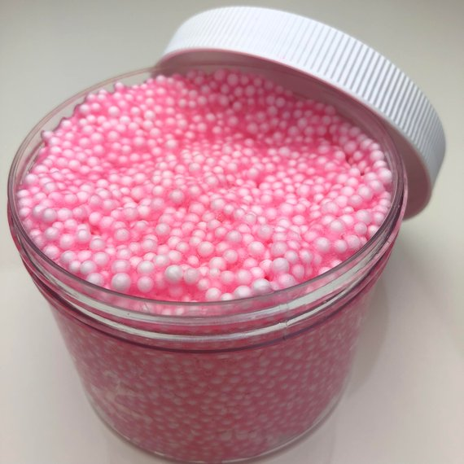
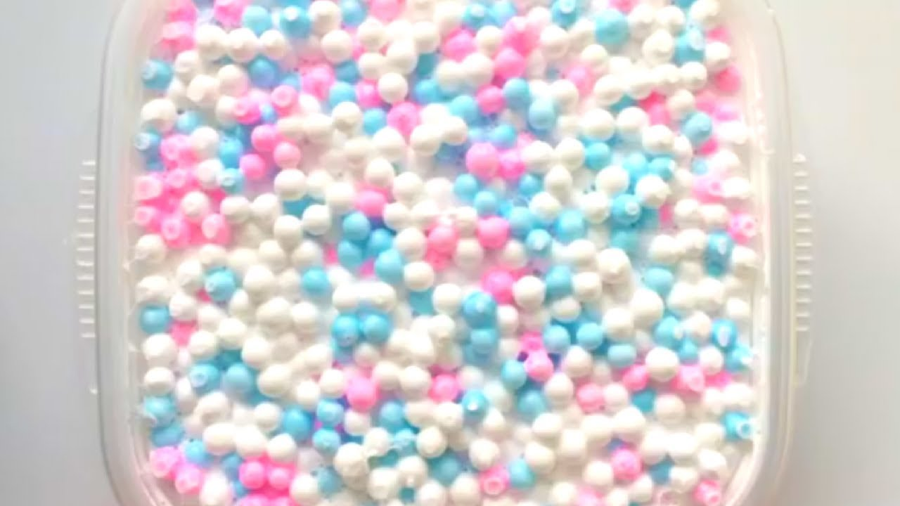
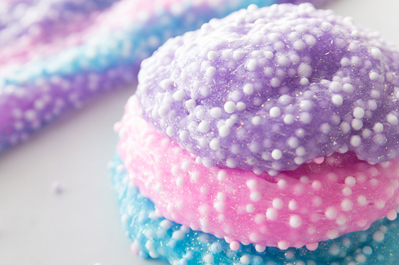

Floam is a moldable type of slime that contains polystyrene (plastic foam) beads in it. You can shape it around objects and sculpt with it.

Floam is a slimy substance with polystyrene beads in it that kids can mold into shapes. You can sculpt with it or use it to coat other objects. You can store it to reuse it or allow it to dry if you want permanent creations. It's a lot of fun, but not always easy to locate. You might be able to buy it at some stores and online, but you can make a type of Floam yourself. As with slime, it's very safe, though anything containing food coloring can stain surfaces. Don't eat Floam. Polystyrene beads simply aren't food.

You can find polystyrene beads at craft stores, usually as fillers for bean bags or dolls. You can grind plastic foam cups using a cheese grater if you like.
